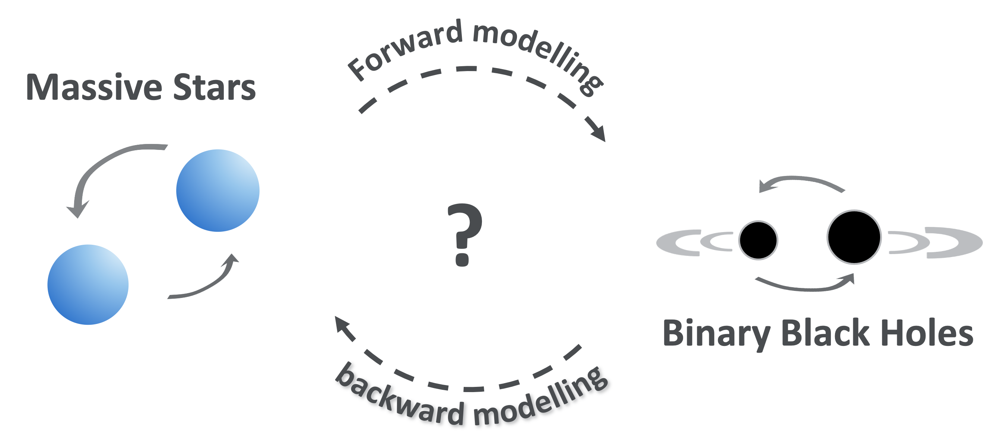
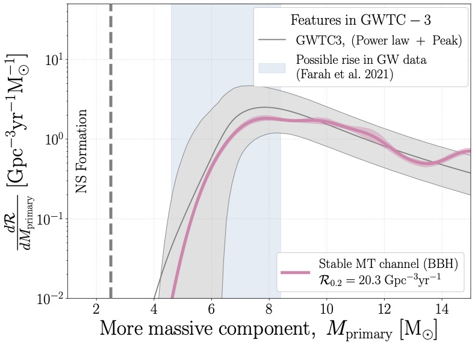
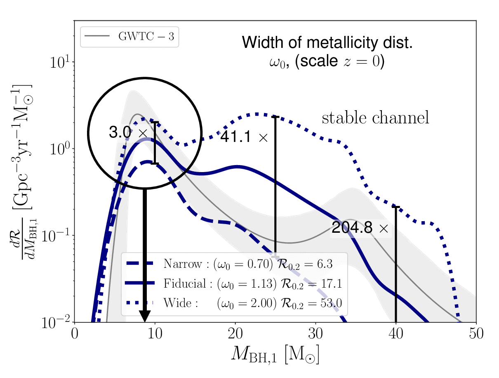

Join my research group @Radboud
I will be starting a new Gravitational-Wave and Binary Population Puzzle group in Radboud from August 2025
Join the group! See the opportunities page for more information.
In Simple Terms

In 2015 humanity managed to, for the first time ever, detect gravitational waves.
These waves are ripples in space-time that make it possible for us to observe gravity.
This discovery was equally important as the first time that we were able to observe radio waves or UV light.
But instead of seeing a new wavelength of the electromagnetic spectrum, we can now observe a whole new force of nature!
It is like before, we could only see the Universe, while now we can also hear it.
This first gravitational wave detection was of two black holes dancing around each other and merging.
Since then, we've observed many more gravitational wave events.
The detectors currently 'hear' a merger event almost every other day, and we expect millions of detections in the coming decade.
Where do all these binary black holes come from? We know that black holes form out of massive stars, but the lives and deaths of massive stars are poorly understood.
This is a shame because massive stars impact nearly every part of modern astrophysics, as they shape our Universe through the elements and ionizing radiation they emit.
I study the properties of black holes (and neutron stars) that we hear through gravitational waves, and use them as fossils of the massive stars that came before them.
You can also listen to this interview on the Dutch radio (NPO radio 1) by Jort Kelder, or to the following episode of 'explain the Universe' by Daniel Whiteson, who interviewed me about the surprising number of gravitational-wave sources we have found so far (starting at 46:50)
Example Research projects
No peaks without valleys: the global peak of the black hole mass distribution.
 We take a look at the highest peak in the binary black hole mass distribution, at ~9 M☉. Only a few formation channels are effective at these lower masses. To explain this peak you need to know why there is a lack of black holes with masses below 9 M☉. The latter is commonly attributed to the much-disputed mass-gap between neutron stars and black holes. However, we show that the `stable mass transfer channel' can explain both the merger rate of BBH mergers, and the location of this global peak, without the need for a mass gap in the single-star remnant distribution. All the associated code and data are publicly available.Effect of the metallicity-dependent cosmic star formation history.
 We don't really know when stars formed, and with what composition (or metallicity). We proposed a simple analytical function for the `metallicity-dependent cosmic star formation history' that can be fit to the output of both cosmological simulations, and observational data constraints where available. Using this new function, we show how the locations of features in the mass distribution of merging black holes don't depend on the metallicity-dependent cosmic star formation history. All the associated code and data are publicly available.
The Redshift Evolution of the Binary Black Hole Merger Rate: A Weighty Matter
 We want to link the observed merging black holes at redshift ~1 to their progenitor-star formation at even higher redshifts. To do this, we need to know how much time passed between the progenitor-star formation, and the black hole merger, i.e. the `delay time'.
In this work we find correlations between the delay time and black hole masses.
We find that what is known as the `common envelope channel' produces low-mass binary black holes with short delay times (t delay ≲ 1 Gyr), while the `stable channel' moslty forms high-mass binary black holes with long delay times (t delay ≳ 1 Gyr).
This leads to testable predictions about the redshift evolution of low- and high-mass binary black holes!
For more information see the full article,, and the corresponding code -
We want to link the observed merging black holes at redshift ~1 to their progenitor-star formation at even higher redshifts. To do this, we need to know how much time passed between the progenitor-star formation, and the black hole merger, i.e. the `delay time'.
In this work we find correlations between the delay time and black hole masses.
We find that what is known as the `common envelope channel' produces low-mass binary black holes with short delay times (t delay ≲ 1 Gyr), while the `stable channel' moslty forms high-mass binary black holes with long delay times (t delay ≳ 1 Gyr).
This leads to testable predictions about the redshift evolution of low- and high-mass binary black holes!
For more information see the full article,, and the corresponding code -  .
.
Polluting the Pair-instability Mass Gap through Super-Eddington Mass Accretion
 The theory of pair-instability supernovae predicts a gap in the mass distribution of stellar mass black holes (BHs) between approximately 45 and 130 solar masses.
Can we create BHs with masses in this gap by allowing BHs to accrete mass from their stellar companion at a super-Eddington rate?
For more information see here.
The theory of pair-instability supernovae predicts a gap in the mass distribution of stellar mass black holes (BHs) between approximately 45 and 130 solar masses.
Can we create BHs with masses in this gap by allowing BHs to accrete mass from their stellar companion at a super-Eddington rate?
For more information see here.

- © Untitled
- Design: HTML5 UP